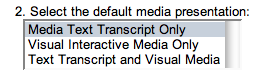

Guia do Usuário em Tópicos
Índice
- Nível do curso
- Apresentação de mídia
- Layout de página
- Navegação pelo teclado
Fechar Janela
Voltar para o Topo
1. Nível do curso
O atributo de nível do curso altera o nível em que o conteúdo do curso é exibido. As opções são: “capítulo”, “seção”, “tópico” ou “página”. O nível padrão é “capítulo”.
- Nível de capítulo – Exibe todas as seções, os tópicos e as páginas no capítulo atual.
- Nível de seção – Exibe todos os tópicos e as páginas da seção atual.
- Nível de tópicos – Exibe todas as páginas do tópico atual.
- Nível de páginas – Exibe somente a página atual.

Fechar Janela
Voltar ao Topo
2. Apresentação de mídia
O atributo de apresentação de mídia altera o formato de reprodução da mídia de cada página. As opções são: “todas as opções”, “reprodução breve”, “reprodução total” ou “mídia interativa visual”. O padrão é “todas as opções”.
- Somente reprodução de mídia e texto – Uma descrição escrita de cada item de mídia é apresentado cada vez em que aparecem no curso. Esta opção é totalmente acessível através do teclado.
- Somente mídia interativa visual – Por padrão, nenhuma mídia é reproduzida. Cada vez em que um item de mídia aparece no curso, o usuário poderá selecionar qual método de apresentação para reproduzir a mídia. Esta seleção é feita para para cada item de mídia, os quais podem ser reproduzidos em qualquer formato.
- Reprodução de texto e mídia visual – Por padrão, nenhuma mídia é exibida. Cada vez em que um item de mída aparece no curso, o usuário pode selecionar o método de apresentção para reproduzir a mídia. Esta seleção ocorre para cada item de mídia, os quais podem ser reproduzidos em qualquer formato.

Fechar Janela
Voltar para o Topo
3. Layout de página
Todas as páginas possuem formatação igual, porém o conteúdo é baseado no nível do curso selecionado antes de início.
Os primeiros itens encontrados são os links de ferramentas do curso. Tais links abrirão uma área na parte superior da página com a ferramenta selecionada. As duas ferramentas disponíveis são “Pesquisa” e “Glossário”. O final da área de ferramentas é marcado com uma régua horizontal.
- Pesquisa – É aberto em uma nova janela. Contém um campo de entrada em que podem ser digitados quaisquer termos de busca. Após enviar a pesquisa, é gerada uma lista de páginas contendo os termos de busca encontrados no corpo do texto de cada página. Estas são listadas na ordem que aparecem no curso.

- Glossário – É aberto em uma nova janela. Contém uma lista com índice de termos do glossário que podem ser seleionados para exibir a definição correspondente. Esta ferramenta também é iniciada quando um termo do glossário vinculado for selecionado dentro do corpo do texto de uma página.
O próximo item é o índice do curso. Esta caixa de seleção contém a lista completa de itens de um curso, separados pela visualização do nível do curso selecionada. Este recurso pode ser usado como uma navegação rápida no curso. Para usar o índice, selecione o item desejado da lista, em seguida o botão “select” para navegar pelo item. O final da área do índice do curso é marcado com uma régua horizontal.

O número de seções, tópicos e páginas exibidos depende da seleção do nível do curso feita no início. O final do nivel de conteúdo é marcado com uma régua horizontal.

O conteúdo do curso é exibido próximo e no seguinte formato:
- Título e subtítulo do curso na guia <h1>
- Número e título o capítulo na guia <h2>
- Número e título da seção na guia <h3>
- Número e título do tópico em negrito e em itálico
- Número da página em negrito
Os elementos finais de uma página são os elementos de navegação “próximo”, “anterior” e “topo”.

- Ir para o próximo – Navega até o próximo capítulo, seção, tópico ou página, dependendo do nível do curso selecionado.
- Ir para o anterior – Navega até o capítulo anterior, dependendo do nível do curso selecionado.
- Ir para o topo – Retorna para o topo da página atual.
Fechar Janela
Voltar para o Topo
4. Navegação pelo teclado
Os seguintes comandos do teclado podem ser usados para acessar ferramentas e navegar pelo curso:
- Ferramenta de pesquisa alternada: Control+Shift+S – Abre a ferramenta de pesquisa em uma nova janela.
- Ferramenta de glossário alternado: Control+Shift+G – Abre a ferramenta glossário em uma nova janela.
- Ir para o próximo: Control+Shift+Seta direita – Navega até o próximo capítulo, seção, tópico ou página, dependendo do nível de curso selecionado.
- Ir para o anterior: Control+Shift+Seta esquerda – Navega até o capítulo, seção, tópico ou página anterior, dependendo do nível de curso selecionado.
- Focalizar próximo elemento: Control+Shift+Seta para baixo – Focaliza o próximo elemento da página. Semelhante à tecla Shift+Tab.
- Focalizar elemento anterior: Control+Shift+Seta para cima - Focaliza o elemento anterior da página. Semelhante ao comando Shift+Tab.
Observação: Alguns plug-ins de navegador e outros softwares de overlay, como leitores de tela, podem anular esses comandos do teclado.
Fechar Janela
Voltar ao Topo